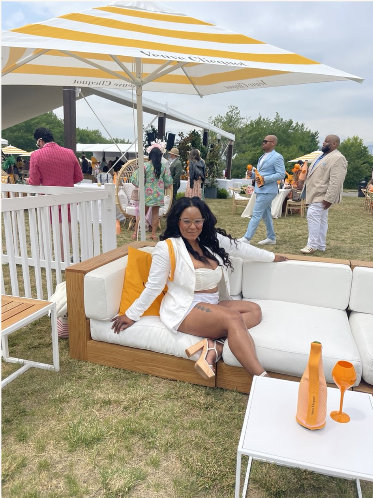
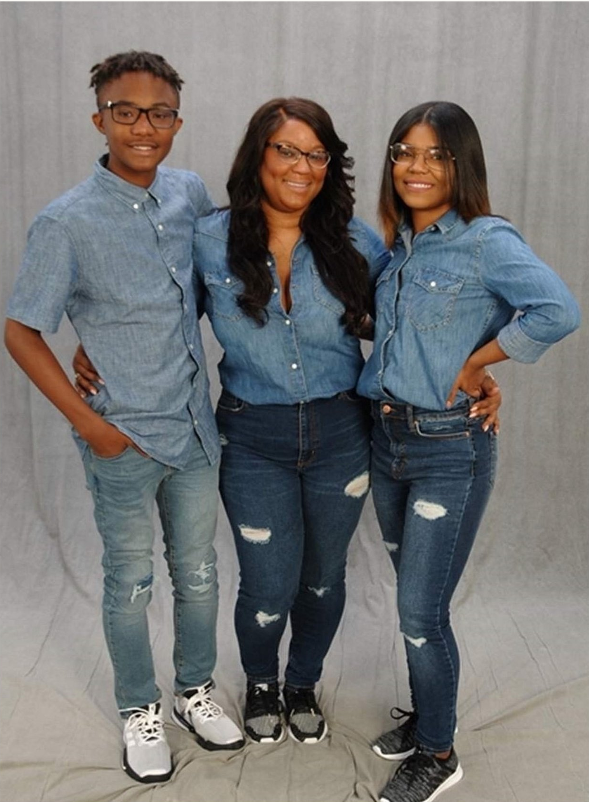
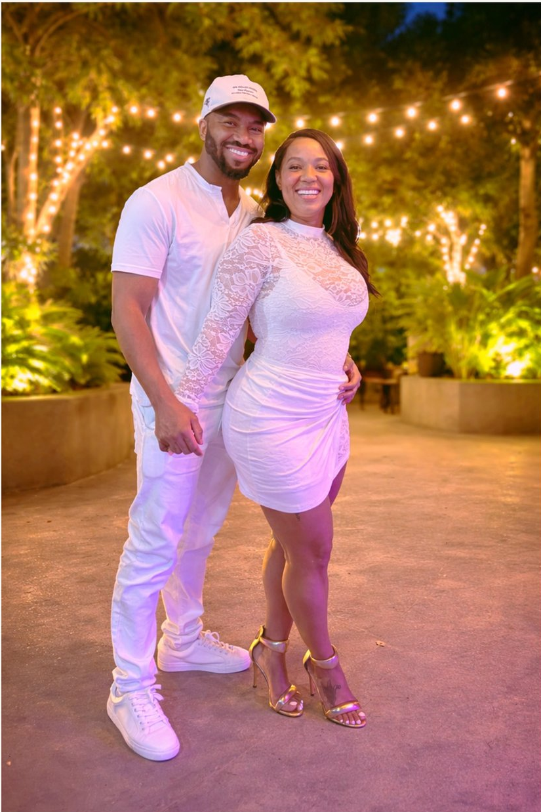
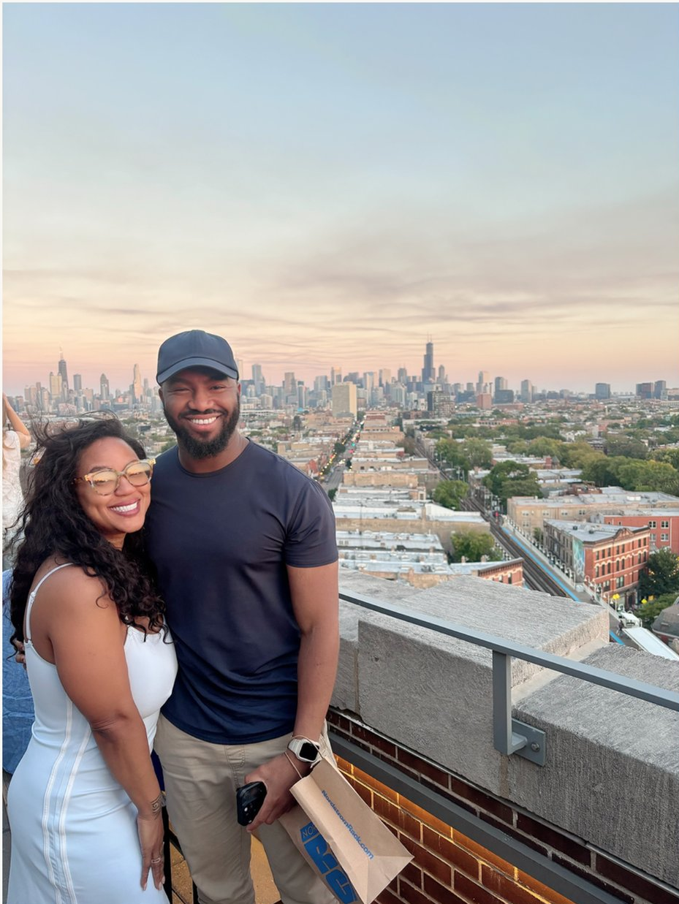
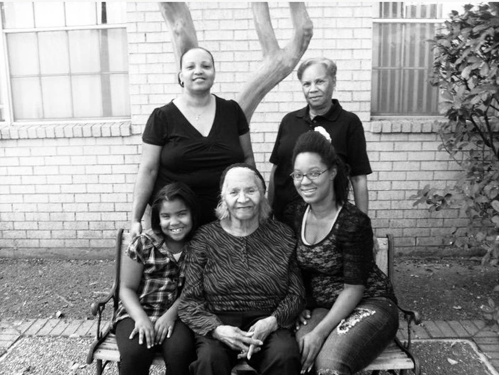

My Family
Love • Roots • Legacy
My People. My Why.
Of everything I have built, created, experienced and accomplished, family is the part of my life that means the most. They are my roots, my motivation and the people who remind me what really matters. Every chapter of my life carries a piece of them with it, and every new chapter gives me even more to be grateful for.

My Children

Envi & Germani
Being their mother is the role that sits above every title I could ever put on a résumé. Watching them grow into their own people has been one of the greatest privileges of my life. They are part of the reason I keep dreaming bigger, trying new things and building a life filled with experiences worth remembering.
One Year Together


Chris
Chris and I recently celebrated one year together. This chapter of my life has brought companionship, laughter, support and a love I am deeply grateful for. I love that our story is still being written, one experience at a time.
Five Generations
20 Years Apart • One Family Line

This photograph holds five generations of women in my family, each exactly 20 years apart. I am 30, my daughter Envi is 10, my mother Toni is 50, my grandmother Delores is 70, and my great-grandmother Doris is 90. Seeing five generations together in one frame is extraordinary. It is a picture of time, motherhood, strength and legacy, and one of the family memories I treasure most.
- Envi
- 10
- Natasha
- 30
- Toni
- 50
- Delores
- 70
- Doris
- 90